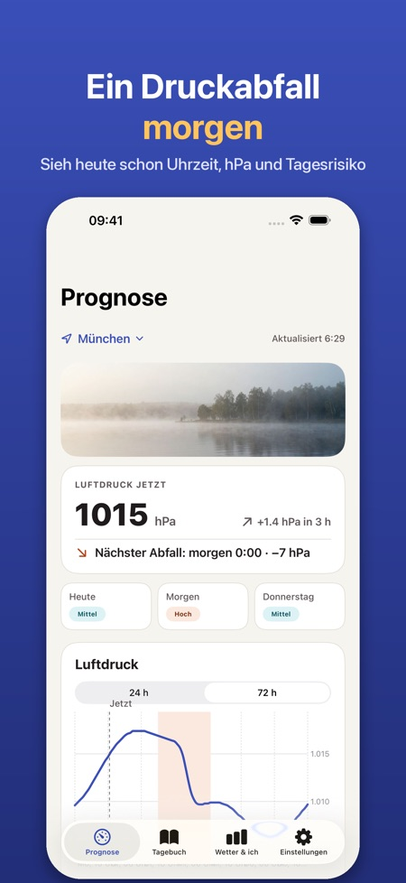
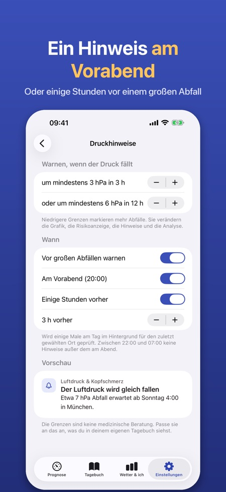
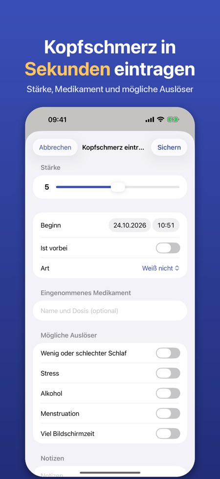

Druckprognose und Tagebuch. Herbststürme bringen schnelle Druckabfälle. Sieh sie Stunde für Stunde kommen, erhalte am Vorabend einen Hinweis und trag Kopfschmerzen mit einem Tippen ein.



Viele Menschen berichten von Kopfschmerzen oder Migräne, wenn der Luftdruck schnell fällt. Die App zeigt den Luftdruck Stunde für Stunde, markiert die großen Abfälle und hilft dir zu sehen, ob das Wetter mit deinen Kopfschmerzen zusammenhängt.
LUFTDRUCK STUNDE FÜR STUNDE
• Grafik des Luftdrucks für die nächsten 24 Stunden (72 Stunden mit Pro) für deinen Standort oder eine Stadt deiner Wahl
• Abfallzonen werden markiert: mindestens 3 hPa in 3 Stunden oder 6 hPa in 12 Stunden – die Grenzen sind einstellbar
• Eine einfache Risikoanzeige pro Tag (niedrig, mittel, hoch), die nur auf der Druckänderung beruht und in der App erklärt wird
• Auch Luftfeuchtigkeit und Temperaturänderung
HINWEIS IM VORAUS (PRO)
• Mitteilung am Vorabend oder einige Stunden vor einem großen Druckabfall
• Die App prüft die Prognose im Hintergrund für den zuletzt gewählten Ort
KOPFSCHMERZTAGEBUCH
• Mit einem Tippen eintragen, auch direkt aus einem Hinweis: Stärke 0–10, Beginn und Ende, Art, Medikament und ob es geholfen hat, Notizen
• Mögliche Auslöser: Schlaf, Stress, Alkohol, Menstruation, Bildschirmzeit
• Monatskalender mit Tagen mit Druckabfall, Details pro Eintrag mit dem Druck um den Beginn und eine Übersicht der eingetragenen Auslöser
BEEINFLUSST MICH DAS WETTER? (PRO)
• Nach 30 Tagen Tagebuch werden deine Kopfschmerztage mit dem Druckabfall des jeweiligen Tages verglichen: einfache Zählungen und Grafiken, keine medizinische Schlussfolgerung
• Bericht für die Arztpraxis: ein PDF für die letzten 30 oder 90 Tage oder einen eigenen Zeitraum
WIDGET (PRO)
• Der Luftdruck jetzt, der Trend und der nächste große Abfall auf dem Home-Bildschirm oder dem Sperrbildschirm
PRO
Jahresabo oder ein einmaliger Kauf für immer. Ohne Pro behältst du die 24-Stunden-Grafik und das Tagebuch. Kein Konto, keine Werbung.
DATENSCHUTZ
Dein Tagebuch bleibt auf deinem iPhone. Nur anonyme Nutzungsstatistik, die du abschalten kannst. Die Wetterdaten stammen von Apple Wetter.
Die App ist kein Medizinprodukt und gibt keine medizinische Beratung oder Diagnose. Wenn sich deine Kopfschmerzen verändern oder stark sind, wende dich an eine Ärztin oder einen Arzt.